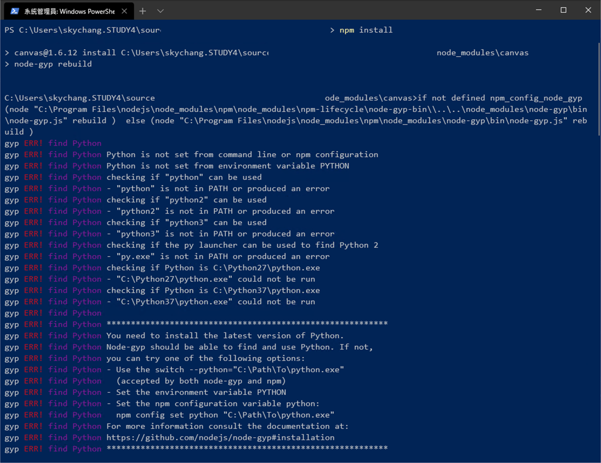
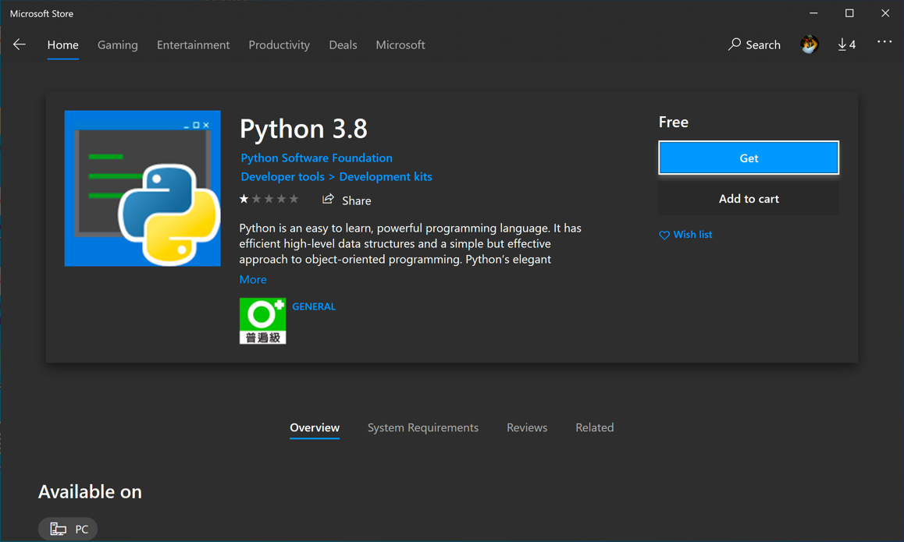
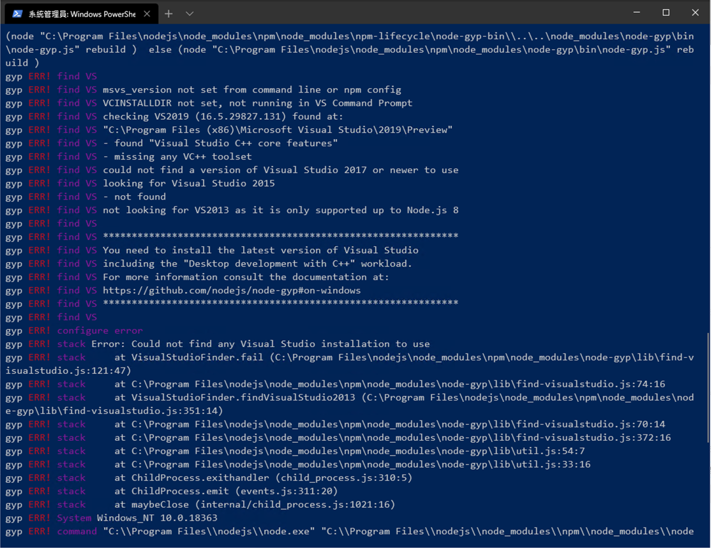
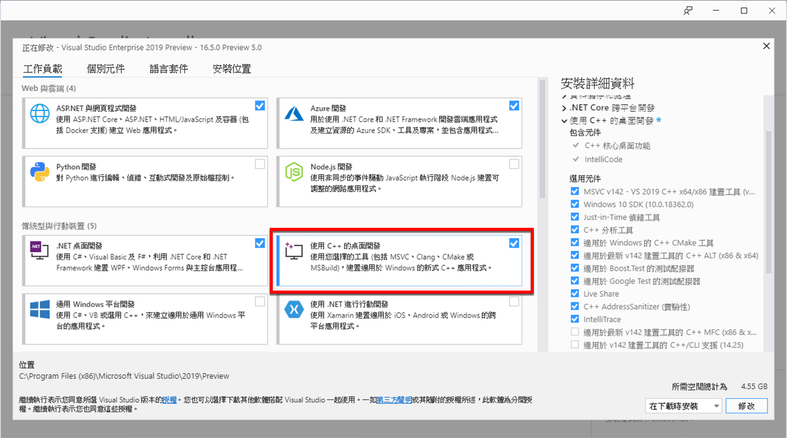
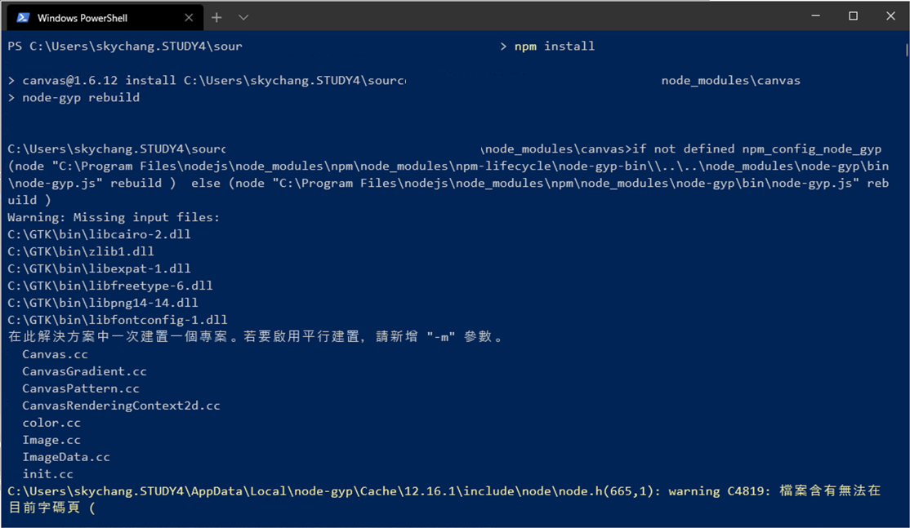
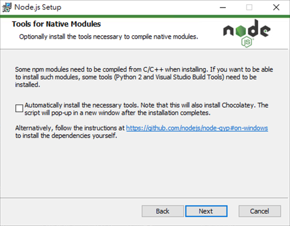
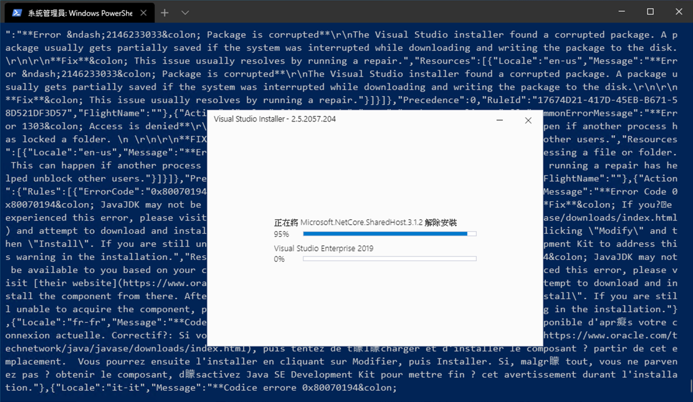
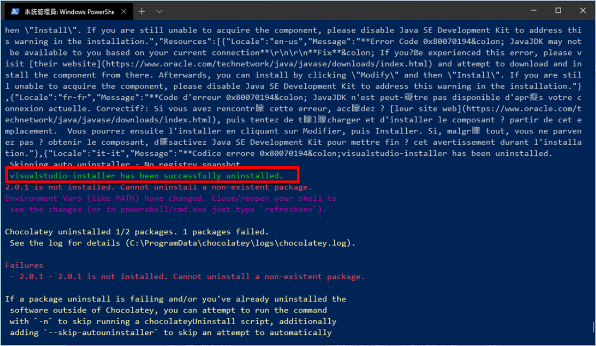

不重要的碎碎念
又幾百年沒寫 Blog 了，看到一年前的文章，好像每年對會這樣道歉一次呢 ( 遮臉 )，但不管怎樣，還是請大家多多包涵啊～～
問題
會回來寫這篇文章，是因為今天搞 node-gyp 和 canvas 的相依性，整整搞了我一天，而且覺得這個問題，未來遇到的機會還是會非常高，所以就在這邊統整紀錄一下，不然過幾天我大概就忘記了 (攤手)
今天發生的問題，主要是因為某個專案有使用到 Fabric 2.2.2，當然，因為這個專案已經有一段時間了，所以版本比較舊，但不論新舊，其實你去 Fabric 的官網可以看到，這個專案其實是相依於 canvas 1.6.x，而要 install canvas，則必須要使用
node-gyp 來進行 build。
當然，相依不是問題，問題是 node-gyp 和 canvas 除了開心地裝完 Node.js 外，還必須搭配其他的東西…
喔，題外話，Fabric 是處理 SVG 等等的套件，所以要 canvas 也不意外了，而 node-gyp 則是原生的 build 套件，則是要拿來 build canvas 用的。
所以當沒處理相依性的時候，就會出現底下錯誤。
Python is not set from command line or npm configuration

補充
目前 Fabric 是 4.x 版本，對應到的 canvas 是 2.x，小弟在處理的是 Fabric 2.x 和 canvas 1.6.x，但所需的東西，小弟是直接看個版本最新所裝的。
簡單的說在 4.x 也會遇到…
在開始之前
這邊要提醒一下大家，其實相依性有滿多東西要裝的，如果真的很懶，可以直接拉到最下面，最後面有一個自動解決的方案，但小弟不喜歡就是了。
安裝 Python
這個錯誤好解決，一看就知道了，就是缺少 Python，基本上目前 node-gyp 是支援 3.x 的 Python 的 ( 至少我沒遇到問題 )
那 Windows 要怎麼安裝 Python 呢？
只要在 PowerShell 打 Python，他就會自動跳出 Microsoft Store 來安裝….

當然，你想用其他安裝方式，也可以啦….但小弟就直接用 Store 來安裝了
缺乏 C++
完成後，繼續往下，會發現，這次少了 C++ Build 的 Tool，在 Windows 底下，當然就是 Visual Studio 莫屬了…
msvs_version not set from command line or npm config

安裝 Visual Studio C++ 桌面開發
那這個怎麼解決呢，簡單，只要安裝 Visual Studio C++ 桌面開發功能就可以了。

截至為止，node-gyp 缺乏的東西就補齊了，基本上 node-gyp 缺乏的就是 Python & C++ Tool.
相關資訊可以參考 node-gyp install
缺乏 GTK
node-gyp 解決後，原本以為ㄧ凡風順，但沒想到 canvas 也缺東缺西。沒錯，缺的就是 GTK…
cairo.h : No Such file or directory

安裝 GTK Cairo Lib
根據官網的敘述，canvas 需要GTK cairo lib ，所以需要進行下載 cairo 64x，當然這邊建議大家還是回到官網看看，有沒有需要更新這個 Lib 的下載位置。
下載完成後，全部解壓縮到 C:\GTK 就可以了，如果不想要解到這個目錄，可以參考上面官網的連結，需要調整 node-gyp 的參數，預設他是吃 C:\GTK
另外，如果 canvas 2.0 以上，想使用 JPEG 的功能，還需要安裝 libjpeg-turbo，小弟的專案沒此需求，所以這邊就省略了，有需要的人自己要注意。
基本上，這樣就可以順利完成了..
番外篇
原則上是這樣，但這次的情況有點特殊，處理完上面所有步驟後，結果還是不行..
出現類似
nan_implementation_12_inl.h(103,37): error C2664 的錯誤…
後來發現，主要是因為一開始安裝的是 node 12.x 版本，而 12.x 對應到 Fabric 2.2.x 和 canvas 1.6.x 版本會有問題。
後續降到 node 8.x 版本，就可以順利解決了….
自動方案
最後，提一下自動方案。
當然，那麼複雜的問題，一定有懶人方案，其實，目前安裝 Node.js 的時候，就會有下圖這個地方可以勾選了。勾完後，就會跳出另外的視窗，自動地幫你把需要的相依性套件裝上 ( 也就是等下我們手動要裝的東西 )，而這個功能，會另外安裝 Chocolatey 來進行相依性套件的管理。原則上，Choco 是還不錯啦，裝某些東西很方便，就如同 mac 底下的 brew。但這邊，除非你的電腦完全沒裝 Visual Studio，甚至也不想裝 Visual Studio ( 不是 VS code )，那我覺得用力地勾下去，就一了百了了，但如果已經有裝 VS。我強烈建議就不要勾了。沒錯，我今天就發生了慘案….

沒錯，如下圖，因為在測試原因，所以後續我就用 choco 把裝上去的東西給移除掉，但…他竟然，竟然把我的 VS 2019 整個移除掉了！！！（ 怒 )

原因是因為，在 node-gyp 的相依性裡面，需要 C++ 的編譯，而勾選後，他預設會裝 VS 2017 的 Build Tool ( 不是整個 IDE，只有指令 )，而他裡面也會裝一個 Visualstudio-installer，當移除這個的時候，就會真的把 Visual Studio Installer 打開，並且把 2019 的東西全部移除 ( 翻 )

所以今天，經歷了 VS 2019 的重灌和重裝 ( 倒 )
另外，官方也提到有這個指令可以快速安裝
npm install --global --production windows-build-tools
不過小弟就沒試了，感覺就和勾選的那個一樣..
結論
總之，如一開始所說，小弟本身也不太喜歡一整包的裝，而且這種裝法，沒事的時候沒事，一忘記，一移除，整個 VS 就 bye 了，所以小弟自己還是喜歡手動處理…
當然如前面所敘述，如果本身就沒裝 VS 的朋友，其實快速安裝，也不失是一種不錯的手段，但不管怎樣，就給大家參考囉～～～～